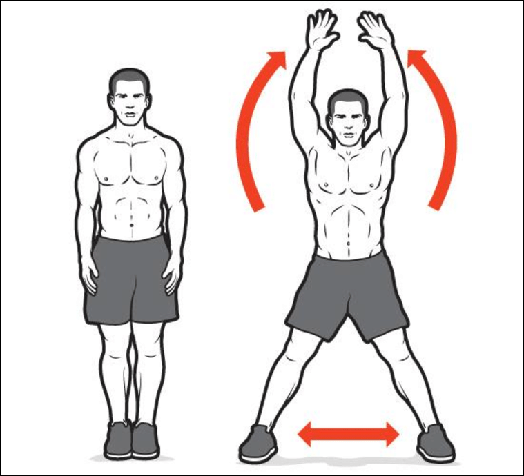
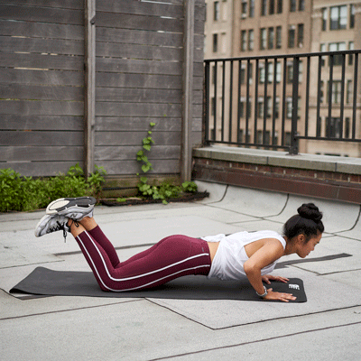
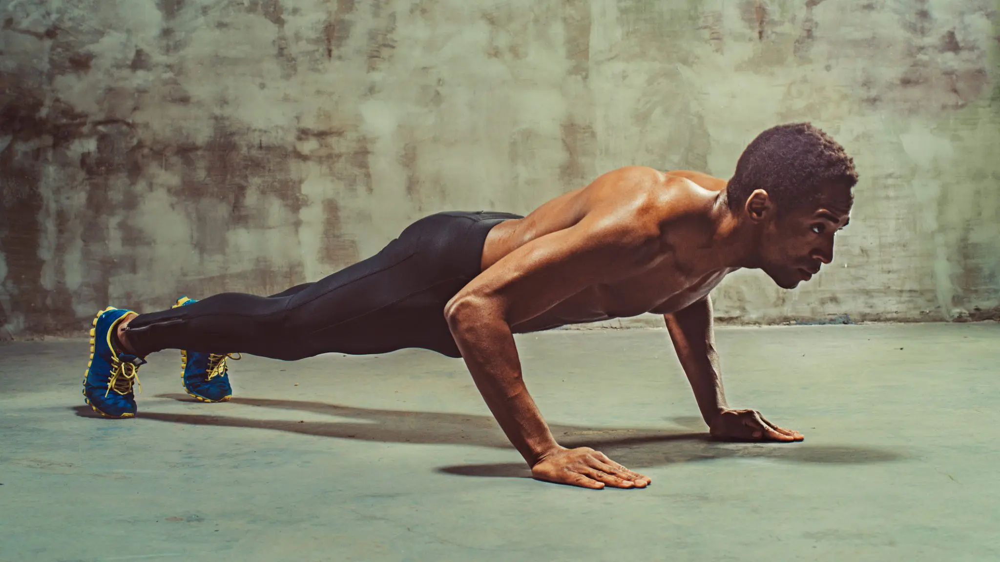
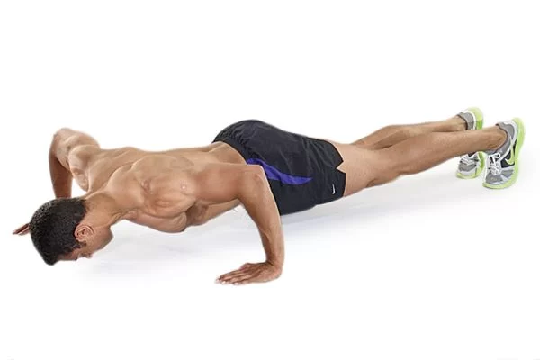
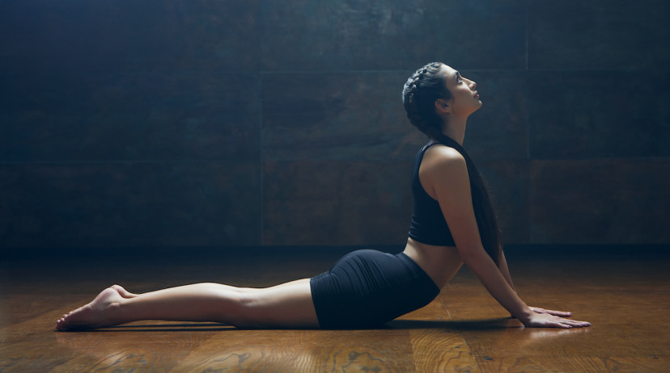

FULL BODY
Exercise 1: Jumping Jacks

Jumping jacks are a classic full-body warm-up exercise that improves
cardiovascular endurance and coordination.
-
Stand tall with arms at your sides and feet shoulder-width apart.
-
Jump while raising your arms overhead and spreading your legs wide.
- Return to the starting position.
- Repeat continuously.
Exercise 2: Inclined Pushups
An elevated version of a standard push-up that reduces difficulty while
improving upper-body strength.
- Place hands on a raised surface, feet on the floor.
- Keep body straight and core tight.
- Lower until chest touches the surface.
- Push back up with control.
Exercise 3: Knee Pushups

A beginner-friendly push-up variation that builds upper-body strength
with less strain.
- Kneel on the floor and place hands shoulder-width apart.
- Engage your abs and lower your torso to the floor.
- Push up to starting position.
- Repeat with steady control.
Exercise 4: Pushups

A fundamental bodyweight exercise for building chest, triceps,
shoulders, and core strength.
- Start in plank with hands slightly wider than shoulders.
- Lower until chest nearly touches floor.
- Push back up to starting position.
- Repeat for reps.
Exercise 5: Wide Arm Pushups

Targets the chest muscles more than traditional pushups by increasing
the horizontal distance between the hands.
- Place hands wider than shoulders, body straight.
- Lower your body slowly keeping your back aligned.
- Push up to return to starting position.
- Repeat for reps.
Exercise 6: Cobra Stretch

Excellent yoga pose that stretches the chest, strengthens the spine, and
enhances flexibility.
- Lie face down with hands under shoulders.
- Press into your palms and lift chest upward.
- Use lower back to deepen the stretch.
- Look slightly forward, hold, and lower gently.